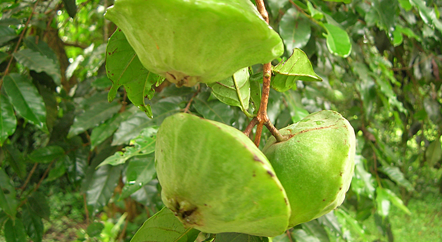

Fruta selecionada
Cambuci limpo, maduro e separado por receita.
Receitas de vó com fruta da Mata Atlântica
A Lili do Cambuci transforma a fruta azedinha e perfumada em bolo, musse, sorvete, licor, cachaça artesanal e cambuci congelado para sua cozinha.

-_na_esquerda_%C3%A9_o_fruto_maduro_e_na_direita_%C3%A9_o_fruto_verde.jpg)
Sobre a fruta
Parente da goiaba e da pitanga, o cambuci é uma fruta nativa da Mata Atlântica. Tem formato achatado, aroma marcante e acidez gostosa, perfeita para geleias, sucos, molhos, doces e licores.
Na cozinha da Lili, ele aparece em receitas simples, bem apuradas, com sabor de fruta de verdade e aquele cuidado que lembra mesa posta no domingo.
Loja artesanal
Adicione na cestinha, informe entrega ou retirada e envie o pedido para o WhatsApp.
Cozinha da Lili
As receitas são hipotéticas, mas seguem um cuidado bem brasileiro: fruta selecionada, açúcar na medida, cozimento lento e potes preparados para chegar bonitos na sua mesa.
Cambuci limpo, maduro e separado por receita.
Produção controlada para manter aroma e textura.
Pote, etiqueta e laço com cara de presente de vó.
Pedido pelo WhatsApp